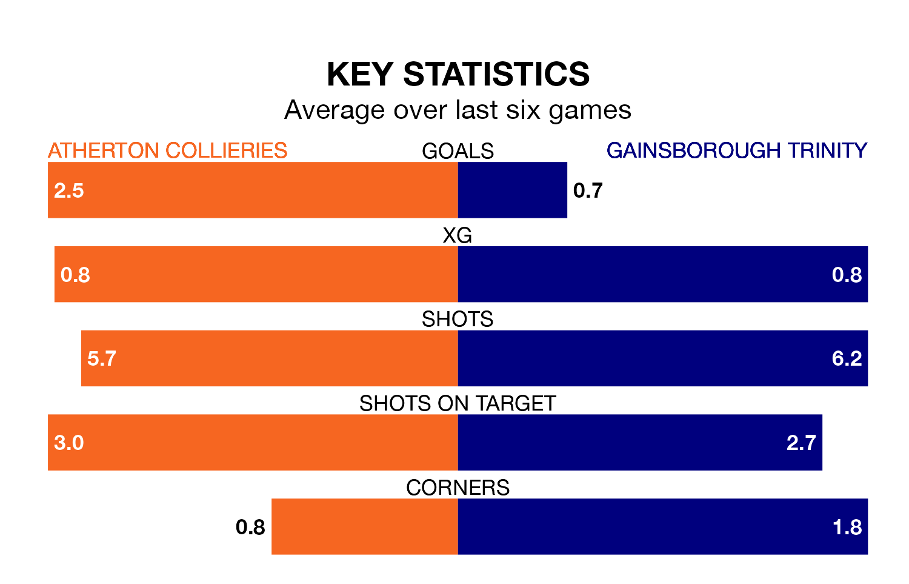

Struggling Atherton Collieries face Gainsborough Trinity on Saturday looking to build on a win in their last league outing.
After securing all three points with a 4-3 victory over Morpeth Town on February 3, Atherton Collieries sit 21st in the Northern Premier League.
They travel to play a Gainsborough Trinity side 17th in the standings, who lost in their last match, 2-0 against United of Manchester.
In the last 10 years, Atherton Collieries and Gainsborough Trinity have played each other on seven occasions. Atherton Collieries won one of them, Gainsborough Trinity four, and they drew twice.
On average, Atherton Collieries scored 1.0 goal and the Blues 1.7 in those matches.
Their last meeting was on September 23, when Gainsborough Trinity won 4-1 at home.
Atherton Collieries are in mixed form in the Northern Premier League, with two wins and a draw from their last six games.
With two wins and four losses over that period, Gainsborough Trinity's form is slightly worse – they have taken six points from 18, compared to the hosts' seven.
With 33 goals in 27 games so far this season, the Blues are scoring at below the league average rate with 1.2 goals per game. And they are conceding more than average, letting in 51 goals at a rate of 1.9 per game.
Atherton Collieries are also below average scorers, with 1.3 goals per game, compared to a league average of 1.7. They have conceded 2.6 goals per game.
Updated: 11:18 (UTC), 08/02/24